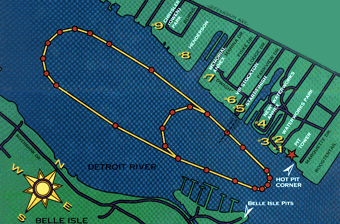

The Chrysler Jeep Detroit APBA Gold Cup
Ticket and Viewing Area Info
The map below shows the 2 race courses, and the numbers represent the paid viewing
areas. The large course is for the Unlimited Hydroplanes while the smaller course
is for the Unlimited Light, Grand Prix, and Jersey Speed Skiff classes.

ZOOM
We have many exciting paid admission plans. These include a mix of grass,
bleacher, covered, or padded (theater style) seating, along with hospitality
tents and the always exciting pit passes. Parking information is found under
each area's description. If you have a camper or R/V, we have an area for
you too.
For information on the viewing areas that are FREE for all days of the event see
the Belle Isle Map.
The best areas for young children and families are Plans #7, #8 and #9, or reserved
seating in the Waterworks Annex area (Plan #4). Each of the paid viewing areas
provide a full range of food, beer and wine for purchase.
THUNDERFEST hotel discounts are available at The Westin, Quality Inn-Romulus, The Riverplace Inn, and The Atheneum.
VIEWING AREA DETAILS:
- General Admission Areas. Free budget pass with each Sunday ticket!
- Saturday: Areas #7, #8 are just $5! (Children under 10 free).
- Sunday: Pricing below, children 6-10 half price (6 and under free).
- Picnic & BBQ area. 14" -beverage- coolers are OK (no glass).
- Nominal on-site parking fee.
- Plan #7 is Memorial Annex, and
tickets for Sunday are $25 when purchased before 5/18, and $30 after.
- Plan #8 is WYST (Henderson) Park. Tickets for Sunday
are $15 when purchased before 5/18, and $20 after.
- Plan #9 is Chrysler (Owen) Park, and
tickets for Sunday are $15 when purchased before 5/18, and $20 after. Park closed Saturday.
- A Budget Pass - $2. Good only Thursday or Friday (including
the Automotive Gold Cup race Friday afternoon!)
- Reserved Seating Areas. A Gold Cup Pit Pass with every ticket!
- Pit Seating and Passes: For the motorsports fan, this
is where you can see the boats and crews up close. Not all "Pit Passes"
include a seat in a viewing area. Read the descriptions closely.
- Dodge Pit Tower Seating. On top of pit tower is a covered bleacher with limited
availability. The view of the course and pits is excellent.
- Dodge Pit Corner Seating. These are two great groups of padded seats right in the
corner of the pits at the 'Roostertail' turn.
- SUPER FAN Hot-Pit Pass. This is the only pass that includes access to the
exciting Dodge Pits "Hot Pits".
- Race Days Pit Pass. Access to the Dodge Pits (paddock area only)
on Saturday & Sunday.
- A Gold Cup Pit Pass - $20. Good Thursday and Friday, along with
Saturday until 11am for ticket holders to plan #1, #2, #3, #4, #5, #6.
- A VIP Pit Pass - $10. Good only Thursday or Friday (qualifying days),
(remember the Automotive Gold Cup race Friday afternoon!)
- Pit Tours - $2 presented
by the Unlimiteds Detroit Club are
available on Thursday and Friday. This gives you an opportunity to watch the pit activity
while having a guide explain a little about the boats and crews.
- Corporate Areas. Call for Hospitality Package info.
- Reserved bleacher seating is available (Plan #2) in Waterworks Park for
groups of 25 or more. This package can include a private hospitality tent and
limited banner rights. One Gold Cup Pit Pass with every ticket.
- Corporate tent viewing for groups of 25 or more is also available with Plan
#6, VIP Stockton. This
location has a fabulous angle of the start/finish line.
- Overnight Camper & R/V Parking is
available on Belle Isle for a modest site fee. Proceeds go to Belle Isle Parks &
Recreation.. call them at (313) 267-7115 for more info.
- A number of boaters lay anchor at the East end of the course and watch from
there. Call the U.S. Coast Guard - Belle Isle Station for more information about this area.
 Return to the Spectator Info page.
Return to the Spectator Info page.
Return to the Top THUNDERFEST page.
All contents Copyright © 1997 Spirit of Detroit THUNDERFEST, except where noted.
All Rights Reserved.
Web page created by Brian Reed.